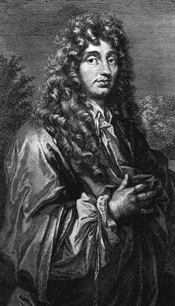
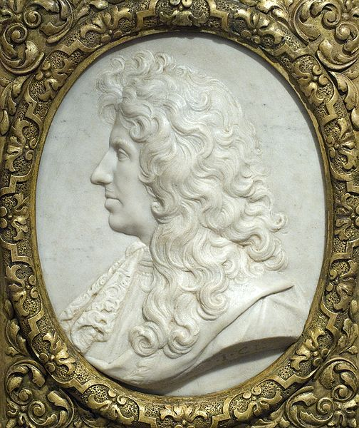
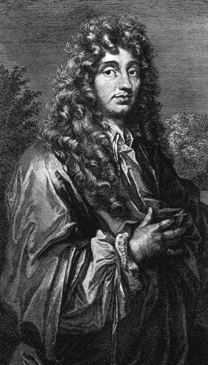
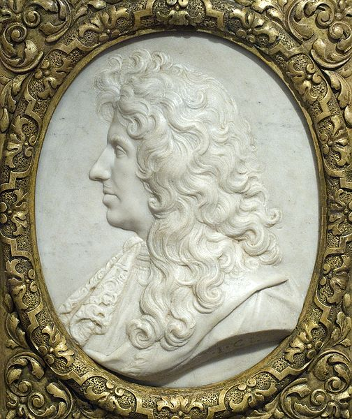
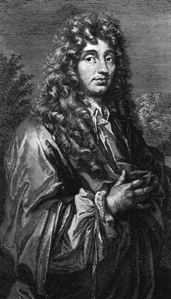
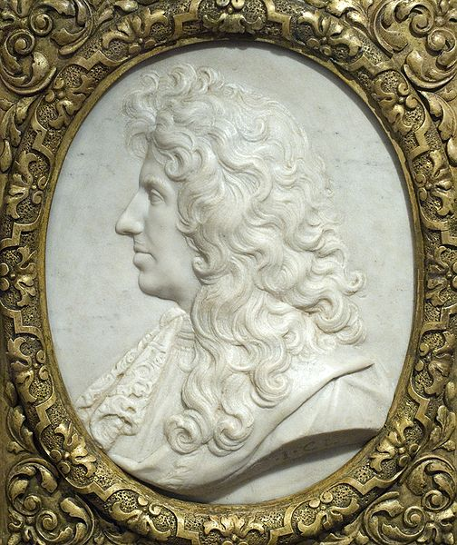

Christiaan Huygens, (14 April 1629 – 8 July 1695) was a prominent Dutch mathematician and scientist. He is known particularly as an astronomer, physicist, probabilist and horologist.
Huygens was a leading scientist of his time. His work included early telescopic studies of the rings of Saturn and the discovery of its moon Titan, the invention of the pendulum clock and other investigations in timekeeping. He published major studies of mechanics and optics (being one of the most influential proponents of the wave theory of light), and pioneered work on games of chance.

